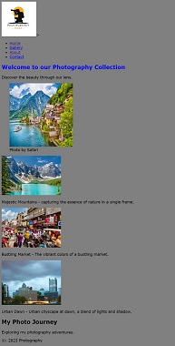
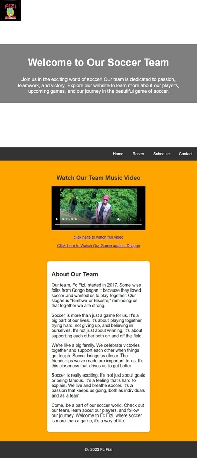

Projects
Here, you will find a showcase of my creative ventures and technical projects that highlight my skills and passion.
Every project represents a journey, a learning experience, and a step forward in my pursuit of making meaningful contributions to the world of technology.
Photography Projects
I made a special collection of pohotos that show the beauty of nature and cities. It include lovely gardens, beautiful landscapes, and city scenes.
Each picture tells its own story with colors, light, and shadows. They capture the calm and liveliness of different places.
I want these photos to make people feel something and appreciate the beauty that's all around us, even in everyday moments.
This project was about sharing the moments and connecting with people through photograph.
Soccer Team Website
Made a website for my soccer team, you can find information about our team, our games, and the players. It helps everyone stay connected.
The website include a schedule of our games, player profiles, and match highlights to keep our fans engaged and informed.
It's designed to captured the spirit and energy of our team, encouraging more people to get involved in our community.
This project was a fantastic opportunity to blend my passion for sports with my love for web development.
It improved my skills in data management, dynamic content presentation, and user engagement through an intuitive interface.
The experience of working on this website was incredibly rewarding as it helped me foster teamwork and collaboration within the soccer community.